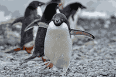
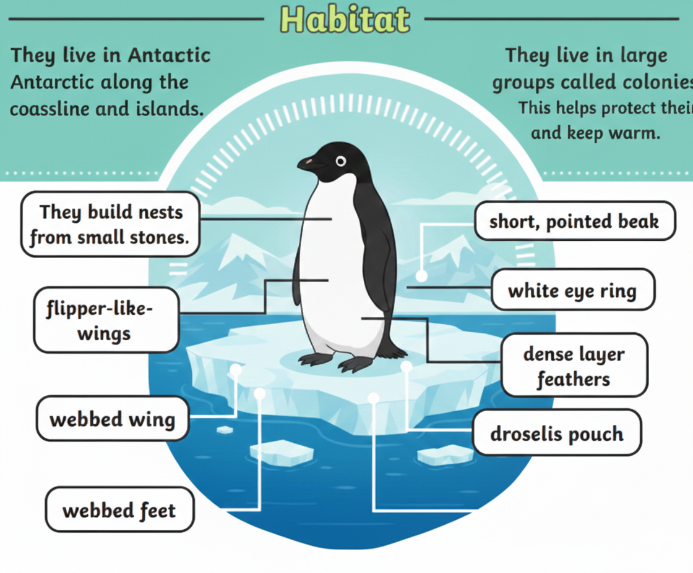
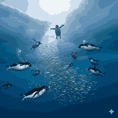

One of the Most Common Antarctic Penguins

Adélie penguins are small and energetic penguins found along the Antarctic coastline. They are easily recognized by the white ring around their eyes and their tuxedo-like appearance.

Adélie penguins live on rocky, ice-free coastal areas of Antarctica. They build nests using small stones and live in large colonies during breeding season.

Adélie penguins mainly eat krill, fish, and squid. They are strong swimmers and spend much of their life in the ocean searching for food.